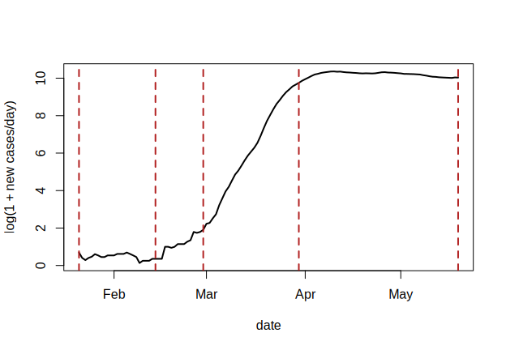
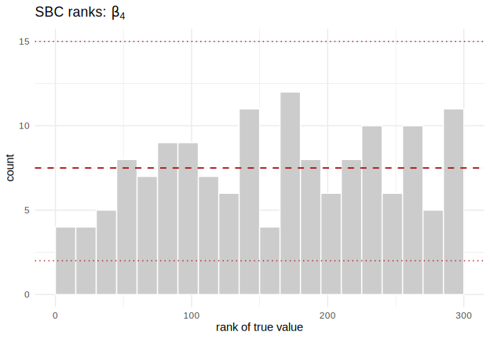
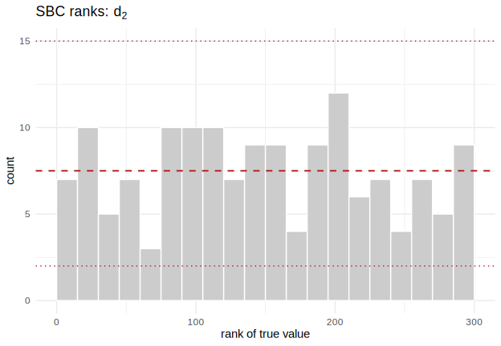
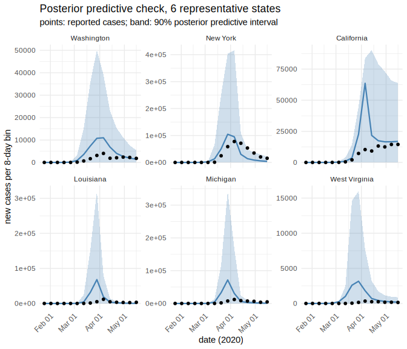

Amortized R(t): a time-varying-beta SIR model across all US states
Source:vignettes/sir-time-varying-beta.Rmd
sir-time-varying-beta.Rmdvignette("sir-epidemic") fits a stochastic SIR outbreak
with a constant contact rate
.
Real epidemics do not hold still: control measures, behavior change, and
depleting susceptibles all move the transmission rate over the course of
an outbreak. This vignette lets
vary with time,
,
and asks the question public-health teams actually care about: how did
the effective reproduction number
evolve? We answer it for all 50 US states plus Washington, DC, over the
first 120 days of the SARS-CoV-2 pandemic (2020-01-21 to 2020-05-19),
training one amortized posterior and conditioning it on
each state’s reported-case curve in turn.
Two modeling questions have to be answered before any of that: how many points does need, and where do they go? We answer both from the data rather than by assumption.
The data: reported cases in the first 120 days
We use the New York Times’ county/state-level COVID-19 case counts, which start on 2020-01-21 — the date of the first confirmed US case (Snohomish County, Washington) — and US Census population estimates to convert case counts to a proportion of each state’s population.
cases_url <- "https://raw.githubusercontent.com/nytimes/covid-19-data/master/us-states.csv"
pop_url <- "https://raw.githubusercontent.com/COVID19Tracking/associated-data/master/us_census_data/us_census_2018_population_estimates_states.csv"
raw_cases <- read.csv(cases_url)
pop_table <- read.csv(pop_url)
raw_cases$date <- as.Date(raw_cases$date)
start_date <- as.Date("2020-01-21")
end_date <- start_date + 119L # 120 days, day 1 .. day 120
window <- raw_cases[raw_cases$date >= start_date & raw_cases$date <= end_date, ]
# the 50 states + DC only -- drop territories (Puerto Rico is the only one the
# population table also carries, so it needs an explicit exclusion)
state_names <- sort(setdiff(intersect(unique(window$state), pop_table$state_name),
"Puerto Rico"))
window <- window[window$state %in% state_names, ]
length(state_names)
#> [1] 51Daily counts are noisy (weekend reporting lulls, occasional data-revision corrections that make the cumulative count dip). We convert each state’s cumulative series to new cases per day, clip negative revisions to zero, and aggregate into 15 non-overlapping 8-day bins — coarse enough to smooth weekday effects, still fine enough to trace the rise and fall of the first wave.
n_bins <- 15L
bin_len <- 8L # 15 * 8 = 120 days
days <- n_bins * bin_len
new_cases_binned <- function(state_df) {
full <- data.frame(date = seq(start_date, end_date, by = "day"))
full <- merge(full, state_df[, c("date", "cases")], by = "date", all.x = TRUE)
full$cases[is.na(full$cases)] <- 0
full$cases <- cummax(full$cases) # enforce a monotone cumulative count
new <- c(full$cases[1], diff(full$cases))
new[new < 0] <- 0 # data-revision artifacts
bin <- rep(seq_len(n_bins), each = bin_len)
as.numeric(tapply(new, bin, sum))
}
case_bins <- t(sapply(state_names, function(s) new_cases_binned(window[window$state == s, ])))
rownames(case_bins) <- state_names
pop <- stats::setNames(pop_table$population, pop_table$state_name)[state_names]
range(pop)
#> [1] 577737 39557045State populations span two orders of magnitude, from Wyoming (577,737) up to California (39,557,045). That range matters for the simulator below: population size is a known covariate, not something we infer, but the amortized posterior still has to condition on it correctly for a 39-million-person state and a 600,000-person state alike.
The national aggregate is the curve we will use to choose ’s knots.
national <- aggregate(cases ~ date, data = window, sum)
national <- national[order(national$date), ]
national$new <- pmax(c(national$cases[1], diff(national$cases)), 0)
roll7 <- function(x, k = 7) sapply(seq_along(x), function(i) mean(x[max(1, i - k + 1):i]))
national$new7 <- roll7(national$new)
national$day <- as.numeric(national$date - start_date) + 1
plot(national$date, national$new7, type = "l", lwd = 2,
xlab = "date", ylab = "new cases/day (7-day average)",
main = "US reported cases, first 120 days")
plot of chunk national-curve
How many knots, and where?
We model as piecewise linear between a small number of knots — the simplest spline that can bend. Too few knots and cannot represent the epidemic’s actual shape (seeding, acceleration, control); too many and the amortized posterior is trying to pin down parameters the data cannot separately identify, which is exactly the overfitting SBC would later expose as miscalibration.
We pick the number and placement by fitting a continuous
piecewise-linear (linear-spline) regression to the log of the national
curve, log(new7), and selecting breakpoints by BIC — the
standard bias/variance trade-off for segmented regression. For each
candidate breakpoint count
,
we grid-search breakpoint locations (5-day grid) for the placement that
minimizes the residual sum of squares, and track how much BIC improves
from
to
.
nat <- national[national$new7 > 0, ]
y <- log(nat$new7)
day <- nat$day
n_obs <- length(y)
fit_bic <- function(taus) {
X <- cbind(1, day, sapply(taus, function(tau) pmax(day - tau, 0)))
fit <- lm.fit(X, y)
if (any(is.na(fit$coefficients))) return(NULL)
rss <- sum(fit$residuals^2)
p <- ncol(X)
list(bic = n_obs * log(rss / n_obs) + p * log(n_obs), taus = taus)
}
cand <- seq(10, 110, by = 5)
best_by_k <- lapply(0:6, function(k) {
if (k == 0) return(fit_bic(numeric(0)))
combs <- combn(cand, k)
best <- NULL
for (j in seq_len(ncol(combs))) {
r <- fit_bic(combs[, j])
if (!is.null(r) && (is.null(best) || r$bic < best$bic)) best <- r
}
best
})
knot_table <- data.frame(
breakpoints = 0:6,
bic = sapply(best_by_k, `[[`, "bic"),
taus = sapply(best_by_k, function(b) paste(b$taus, collapse = ", "))
)
knot_table$delta_bic <- c(NA, -diff(knot_table$bic))
knot_table
#> breakpoints bic taus delta_bic
#> 1 0 135.14785 NA
#> 2 1 27.75666 80 107.391183
#> 3 2 -243.69618 30, 70 271.452840
#> 4 3 -297.81147 25, 40, 70 54.115294
#> 5 4 -338.15130 15, 20, 40, 70 40.339827
#> 6 5 -363.35963 15, 20, 40, 65, 75 25.208332
#> 7 6 -366.44797 10, 15, 20, 40, 65, 75 3.088339BIC keeps improving out to 6 breakpoints, so raw BIC alone does not
pick a clear winner — a second signal does. Compare the breakpoint sets
themselves: going from 2 to 3 breakpoints refines the previous
solution ({30, 70} becomes {25, 40, 70}, i.e. the existing breakpoints
move slightly and one is added), but going from 3 to 4 does not — {25,
40, 70} is replaced wholesale by {15, 20, 40, 70}, dropping day 25 and
inserting two breakpoints only 5 days apart, both inside the window
where national counts were in the single or low double digits. That is
the signature of a search fitting noise in small counts rather than
finding new structure: real inflections give stable refinements as
k grows, spurious ones cause the whole configuration to
jump. Beyond 4 breakpoints the configurations keep reshuffling in the
same way, and the marginal BIC gain (delta_bic) has by then
dropped an order of magnitude from its peak. We take 3
breakpoints — 4 constant segments in
— as the last stable, well-supported fit. Combined with the two
endpoints (day 1 and day 120), that gives 5 boundary
days:
Those knots line up with the actual course of the US epidemic: day 1 (2020-01-21, the first detected case) through the low, mostly-imported count of late January and February; an inflection around day 25 (Feb 14) as community transmission took hold; a second inflection near day 40 (Feb 29), close to the WHO’s March 11 pandemic declaration and the first stay-at-home orders; a third near day 70 (Mar 30), by which point most states had issued stay-at-home orders and growth was decelerating; and day 120 (2020-05-19), by which point the first wave had largely plateaued nationally. We are not fitting these dates to epidemiology by hand — they fell out of the BIC search — but they recover a shape anyone who lived through spring 2020 will recognize.
plot(national$date, log1p(national$new7), type = "l", lwd = 2,
xlab = "date", ylab = "log(1 + new cases/day)")
abline(v = start_date + knot_days - 1, col = "firebrick", lty = 2, lwd = 2)
plot of chunk knot-plot
The model: a stochastic SIR with a piecewise-constant
The dynamics are the same discrete-time, binomial-transition SIR used
in vignette("sir-epidemic") — susceptible, infected, and
recovered counts update via rbinom(), so the process is
genuinely stochastic and there is no tractable likelihood for the
reported-case curve. What is new:
is no longer a scalar. Between each pair of adjacent breakpoints,
is held constant at a free parameter
— a flat contact rate for the duration of a regime. At the 3 interior
breakpoints the level either side blends into the other over a smooth,
roughly one-week logistic transition rather than
switching in a single day: behavior change and policy roll-out (school
closures, stay-at-home orders) unfold over days, not instantaneously,
and a hard step would force that transition through whatever handful of
days straddle the breakpoint.
The breakpoint days themselves also get wiggle room per state: the national BIC search picks a shared, nominal set of breakpoints, but community transmission did not take hold, and stay-at-home orders did not land, on the same calendar day in every state. Rather than move each breakpoint independently – which risks two adjacent breakpoints crossing, collapsing a regime to zero width or reversing its order – we put a prior on each regime’s duration (how many days segment lasts), not on the breakpoints’ absolute positions. Each is log-normal around its nominal (national) duration, and the 4 sampled durations are rescaled to sum to exactly the 119 days between day 1 and day 120. Breakpoints are then the cumulative sums of those durations, which are positive by construction, so the regimes tile the window in order for every draw – collision is impossible rather than merely unlikely. The recovery rate is fixed, not inferred: with only case counts (no recovery or serology data) the generation interval is not separately identifiable from , so we set days, in line with early estimates of the COVID-19 serial interval (Li et al. 2020, NEJM). is therefore the basic reproduction ratio implied by the contact rate at time ; with cumulative incidence staying well under a few percent of any state’s population over 120 days, the susceptible-depletion correction that separates from the effective reproduction number stays close to 1 and we do not model it separately.
Two more pieces reflect real surveillance data rather than the clean simulated curves of the earlier vignette:
- Ascertainment. Only a fraction of infections became a confirmed, reported case in spring 2020, when testing capacity was scarce. is inferred jointly with rather than fixed.
- Population size is a known covariate, not a free parameter: the simulator draws it from a distribution spanning the range of actual state populations, and the density estimator conditions on it directly (as , passed alongside the case-count data) so that one trained network generalizes from Wyoming to California.
library(neuralsbi)
#>
#> Attaching package: 'neuralsbi'
#> The following object is masked from 'package:base':
#>
#> sample
n_knots <- length(knot_days)
n_segments <- n_knots - 1L # 4 constant-beta regimes
nominal_dur <- diff(knot_days) # nominal (national) duration of each regime
total_days <- sum(nominal_dur) # 119: span covered day 1 -> day 120
transition_days <- 7 # ~1-week logistic transition per breakpoint
transition_scale <- transition_days / 4
dur_log_sd <- 0.35 # per-state wiggle room on each regime's duration (log scale)
gamma_fixed <- 1 / 7
param_names <- c(paste0("beta[", seq_len(n_segments), "]"),
paste0("d[", seq_len(n_segments), "]"), "rho")
prior <- prior_normal(
mean = stats::setNames(c(rep(log(0.3), n_segments), log(nominal_dur), qlogis(0.1)),
param_names),
sd = c(rep(0.5, n_segments), rep(dur_log_sd, n_segments), 1)
)
sir_rt_simulator <- function(theta, N_fixed = NULL) {
theta <- matrix(as.numeric(theta), ncol = 2L * n_segments + 1L)
n <- nrow(theta)
log_beta_segments <- theta[, seq_len(n_segments), drop = FALSE]
log_dur <- theta[, n_segments + seq_len(n_segments), drop = FALSE]
rho <- plogis(theta[, 2L * n_segments + 1])
# population: a known covariate, drawn to span real US state sizes during
# training and fixed to the observed state's population at inference time
N <- if (is.null(N_fixed)) exp(stats::runif(n, log(5e5), log(4e7))) else rep(N_fixed, n)
# regime durations: exp() keeps them positive, then rescaling each draw's 4
# durations to sum to total_days pins the breakpoints to the same 119-day
# span the data cover. Their cumulative sum is therefore always increasing
# -- breakpoints cannot collide or cross for any draw -- while the prior
# on log_dur still lets each regime run a little longer or shorter, and
# start a little earlier or later, than the national placement.
dur <- exp(log_dur)
dur <- dur / rowSums(dur) * total_days # n x n_segments, rows sum to total_days
tau <- knot_days[1] + t(apply(dur, 1, cumsum))[, seq_len(n_segments - 1), drop = FALSE]
t_grid <- seq_len(days)
w_ext <- c(list(matrix(1, n, days)),
lapply(seq_len(n_segments - 1), function(k) {
outer(tau[, k], t_grid, function(t0, t) plogis((t - t0) / transition_scale))
}),
list(matrix(0, n, days)))
log_beta_t <- Reduce(`+`, lapply(seq_len(n_segments), function(j) {
(w_ext[[j]] - w_ext[[j + 1]]) * log_beta_segments[, j]
}))
beta_t <- exp(log_beta_t) # n x days
I0 <- 1 + stats::rpois(n, 1.5) # a handful of independent introductions
S <- N - I0; I <- I0; R <- rep(0, n)
new_daily <- matrix(0, n, days)
n_sub <- 2L; dt <- 1 / n_sub
for (t in seq_len(days)) {
H <- rep(0, n)
beta <- beta_t[, t]
for (s in seq_len(n_sub)) {
p_inf <- pmin(pmax(1 - exp(-beta * I / N * dt), 0), 1)
p_rec <- pmin(pmax(1 - exp(-gamma_fixed * dt), 0), 1)
dN_SI <- stats::rbinom(n, pmax(round(S), 0), p_inf)
dN_IR <- stats::rbinom(n, pmax(round(I), 0), p_rec)
S <- S - dN_SI; I <- I + dN_SI - dN_IR; R <- R + dN_IR
H <- H + dN_SI
}
new_daily[, t] <- stats::rbinom(n, pmax(round(H), 0), rho)
}
bin <- rep(seq_len(n_bins), each = bin_len)
x_bins <- t(apply(new_daily, 1, function(row) tapply(row, bin, sum)))
cbind(log(N), log1p(x_bins)) # log(N) + 15 binned, log1p-compressed case counts
} is
9-dimensional and unconstrained on
— the log/logit transforms mean we can use a single Gaussian prior with
no truncated support, so the posterior needs no rejection sampling for
leakage, and the rescaling inside the simulator (not the prior) is what
keeps the regimes from colliding. Naming prior’s
mean vector (beta[1], …, d[1], …,
rho) carries those names through every posterior draw, SBC
result, and diagnostic plot below.
Training the amortized posterior
One MAF is trained across the whole prior — including the full range of state population sizes — and reused for every state below. This is what amortized buys: train once, then condition on 51 different observations for the price of a forward pass each.
fit <- npe(prior, sir_rt_simulator, n_simulations = 12000,
density_estimator = "maf", max_epochs = 200, n_restarts = 1,
seed = 1, verbose = FALSE)
fit
#> <nsbi_npe> Neural Posterior Estimation fit
#> density estimator : maf
#> parameters (dim) : 9
#> names : beta[1], beta[2], beta[3], beta[4], d[1], d[2], d[3], d[4], rho
#> data (dim) : 16
#> names : , 1, 2, 3, 4, 5, 6, 7, 8, 9, 10, 11, 12, 13, 14, 15
#> simulations : 12000
#> best val loss : 6.9308
#> -> build a posterior with posterior(fit, x_obs = ...)Validate before trusting a single R(t) curve
Simulation-based calibration (SBC) checks that the posterior’s credible intervals have the coverage they claim, using fresh prior draws the network never saw during training. For each of many simulated “true” parameter values we compute where that true value ranks among posterior draws conditioned on the resulting simulated data; if the posterior is calibrated, that rank is equally likely to fall anywhere, so the histogram of ranks across trials should come out flat. A histogram skewed toward the edges means the posterior is overconfident (true value often falls outside the bulk of the posterior); skewed toward the middle means underconfident. The red dashed line marks the count expected under perfect calibration, and the dotted lines mark a 99% band around it, so any bar that pokes outside the dotted lines is a genuine, not just noisy, departure from flat.
sbc_res <- sbc(fit, sir_rt_simulator, n_sbc = 150, n_posterior_samples = 300, seed = 2)
sbc_res # one uniformity p-value per parameter: 4 log-beta regimes, 4 regime durations, then rho
#> <nsbi_sbc> 150 trials, 300 posterior samples each
#> per-parameter uniformity p-values (large = calibrated):
#> beta[1]=0.487 beta[2]=0.086 beta[3]=0.109 beta[4]=0.666 d[1]=0.312 d[2]=0.701 d[3]=0.855 d[4]=0.154 rho=0.201Three parameters are worth looking at directly:
in the final regime (day 120 — the most policy-relevant point, closest
to “now” in this window), the duration
of the regime nearest the WHO’s pandemic declaration and the first
stay-at-home orders (the new, previously-fixed piece of the model), and
the ascertainment rate
,
which is the parameter most likely to trade off against
if the two were poorly identified. Because prior’s
mean was a named vector, sbc_res carries those
names, and plot_sbc() renders them as their plotmath symbol
directly in the panel title instead of a generic “parameter 4”.
plot_sbc(sbc_res, param = n_segments)
plot of chunk sbc-beta4
plot_sbc(sbc_res, param = n_segments + 2L)
plot of chunk sbc-d2
plot_sbc(sbc_res, param = 2L * n_segments + 1L)
plot of chunk sbc-rho
And a posterior predictive check against real data grounds the calibration check in the actual observations we care about: does the fitted model, run forward from its posterior, reproduce the shape of a real state’s curve? We check six states that span very different trajectories: Washington (site of the first detected US case), New York (the largest epicenter in this window), California (first state to issue a stay-at-home order), Louisiana (a sharp early surge tied to Mardi Gras), Michigan (a severe Midwest outbreak, including major nursing-home clusters), and West Virginia (the last state to report a case).
highlight <- c("Washington", "New York", "California", "Louisiana", "Michigan", "West Virginia")
bin_mid <- (seq_len(n_bins) - 1) * bin_len + (bin_len + 1) / 2
bin_date <- start_date + bin_mid - 1
post_pred_state <- function(state, n_draws = 500) {
x_obs <- c(log(pop[state]), log1p(case_bins[state, ]))
post <- posterior(fit, x_obs = x_obs)
sim_fixed <- function(theta) sir_rt_simulator(theta, N_fixed = pop[state])
pred <- posterior_predictive(post, sim_fixed, n = n_draws)
pred_counts <- expm1(pred[, -1, drop = FALSE]) # drop log(N); undo log1p
data.frame(state = state, date = bin_date,
observed = case_bins[state, ],
pred_mean = colMeans(pred_counts),
pred_lo = apply(pred_counts, 2, stats::quantile, 0.05),
pred_hi = apply(pred_counts, 2, stats::quantile, 0.95))
}
post_pred_all <- do.call(rbind, lapply(highlight, post_pred_state))
post_pred_all$state <- factor(post_pred_all$state, levels = highlight)
library(ggplot2)
ggplot(post_pred_all, aes(date)) +
geom_ribbon(aes(ymin = pred_lo, ymax = pred_hi), fill = "steelblue", alpha = 0.25) +
geom_line(aes(y = pred_mean), colour = "steelblue", linewidth = 0.8) +
geom_point(aes(y = observed), colour = "black", size = 1.4) +
facet_wrap(~state, ncol = 3, scales = "free_y") +
scale_x_date(date_labels = "%b %d") +
labs(x = "date (2020)", y = "new cases per 8-day bin",
title = "Posterior predictive check, 6 representative states",
subtitle = "points: reported cases; band: 90% posterior predictive interval") +
theme_minimal() +
theme(axis.text.x = element_text(angle = 45, hjust = 1))
plot of chunk post-pred-states
R(t) for every state
For each of the 51 jurisdictions we condition the same trained posterior on that state’s own case-count curve and population, then map each posterior draw – its 4 regime-level values and its own 4 regime durations – through the same logistic-blended step function to get a full 120-day trajectory. Because the durations are now part of , each posterior draw can place a state’s inflection points on slightly different calendar days (always in order, never colliding).
t_grid <- seq_len(days)
rt_state <- function(state, n_draws = 2000) {
x_obs <- c(log(pop[state]), log1p(case_bins[state, ]))
draws <- sample(posterior(fit, x_obs = x_obs), n_draws)
log_beta_segments <- draws[, seq_len(n_segments), drop = FALSE]
dur <- exp(draws[, n_segments + seq_len(n_segments), drop = FALSE])
dur <- dur / rowSums(dur) * total_days
tau <- knot_days[1] + t(apply(dur, 1, cumsum))[, seq_len(n_segments - 1), drop = FALSE]
w_ext <- c(list(matrix(1, n_draws, days)),
lapply(seq_len(n_segments - 1), function(k) {
outer(tau[, k], t_grid, function(t0, t) plogis((t - t0) / transition_scale))
}),
list(matrix(0, n_draws, days)))
log_beta_t <- Reduce(`+`, lapply(seq_len(n_segments), function(j) {
(w_ext[[j]] - w_ext[[j + 1]]) * log_beta_segments[, j]
}))
rt <- exp(log_beta_t) / gamma_fixed
data.frame(state = state, date = start_date + t_grid - 1,
rt_mean = colMeans(rt),
rt_lo = apply(rt, 2, stats::quantile, 0.05),
rt_hi = apply(rt, 2, stats::quantile, 0.95))
}
rt_all <- do.call(rbind, lapply(state_names, rt_state))A handful of states tell the national story: Washington (site of the first detected US case and the Kirkland nursing-home cluster), New York (the largest epicenter in this window), California (first state to issue a stay-at-home order, March 19), Louisiana (a sharp early surge tied to Mardi Gras gatherings in New Orleans), Michigan (a severe Midwest outbreak with its own major nursing-home clusters), and West Virginia (the last state to report a case, on March 17).
rt_highlight <- rt_all[rt_all$state %in% highlight, ]
rt_highlight$state <- factor(rt_highlight$state, levels = highlight)
ggplot(rt_highlight, aes(date, rt_mean)) +
geom_ribbon(aes(ymin = rt_lo, ymax = rt_hi), fill = "steelblue", alpha = 0.25) +
geom_line(colour = "steelblue", linewidth = 0.8) +
geom_hline(yintercept = 1, linetype = 2, colour = "grey40") +
facet_wrap(~state, ncol = 3) +
scale_x_date(date_labels = "%b %d") +
labs(x = "date (2020)", y = expression(R(t)),
title = "Posterior R(t), 6 representative states",
subtitle = "shaded band: 90% credible interval; dashed line: R(t) = 1") +
theme_minimal() +
theme(axis.text.x = element_text(angle = 45, hjust = 1))
plot of chunk rt-highlight
All 51 states, condensed into one view: a heatmap of posterior-mean , states sorted by their peak reproduction number.
peak_order <- names(sort(tapply(rt_all$rt_mean, rt_all$state, max), decreasing = TRUE))
rt_all$state <- factor(rt_all$state, levels = rev(peak_order))
ggplot(rt_all, aes(date, state, fill = rt_mean)) +
geom_raster() +
scale_fill_gradient2(midpoint = 1, low = "steelblue", mid = "white",
high = "firebrick", name = expression(R(t))) +
scale_x_date(date_labels = "%b %d") +
labs(x = "date (2020)", y = NULL,
title = "Posterior mean R(t), all 50 states + DC",
subtitle = "sorted by peak R(t); white = R(t) = 1") +
theme_minimal() +
theme(axis.text.y = element_text(size = 6))
plot of chunk rt-heatmap
The pattern matches the national narrative from the knot-selection curve: starts near or above the epidemic threshold of 1 for the states hit first, climbs through early-to-mid March as community transmission spreads, and comes back down toward 1 by mid-to-late April as stay-at-home orders took effect nearly everywhere — with real heterogeneity in timing and magnitude that a single national estimate would have hidden.
What amortization bought here
The alternative to amortized NPE is fitting a separate model per
state — 51 particle filters, 51 MCMC chains, 51 opportunities for a
chain to fail to converge. Here, training happened once (12000
simulations, one MAF), and every state’s posterior above cost only a
forward pass through the trained network. That is the payoff
vignette("sir-epidemic") promised in the abstract; this
vignette spends it on a real, 51-jurisdiction dataset.
The model still carries real simplifications, worth stating plainly:
is fixed rather than inferred, so sbc() above is calibrated
conditional on that choice, not unconditionally; every state shares the
same number and rough national placement of regimes,
with only a per-state prior on each regime’s duration
letting the exact inflection days move (a state whose epidemic unfolded
on a genuinely different schedule, rather than just a stretched or
compressed one, is not well served by this); the one-week width of the
logistic transition between segments is a modeling choice representing
how quickly behavior or policy shifted, not something the case counts
separately identify; a single ascertainment rate
stands in for what was, in practice, a patchwork of state and local
testing capacity; and importation is reduced to a handful of seed cases
on day 1 rather than a distributed process over the following weeks.
Loosening any of these is a natural next step, and each one is a change
to the simulator, not to the inference machinery around it — the same
amortized-NPE workflow applies unchanged.
For the underlying workflow in more depth, see
vignette("sir-epidemic") and
vignette("diagnostics").